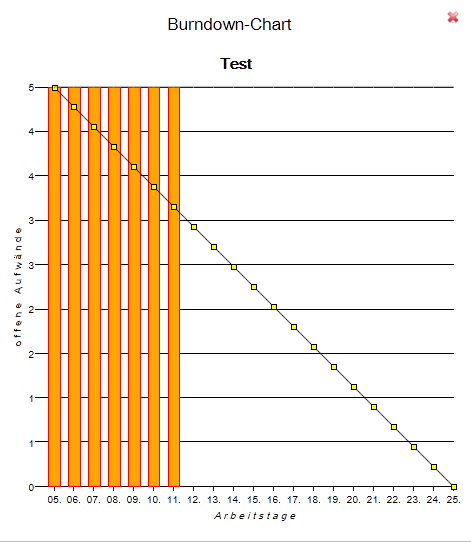
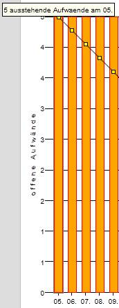
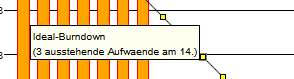

Burndown Chart für Sprints
Der Sprint-Burndown zeigt den Fortschritt eines Sprints anhand abgearbeiteter Tasks (y-Achse) in Relation zur Zeitspanne des Sprints (x-Achse).

Das Chart ist Interaktiv, dass heißt, wenn Sie mit der Maus über die Balken (orange, stellt den realen Burndown Verlauf dar) gehen, werden Ihnen die offenen Aufwände zum gegebenen Arbeitstag angezeigt:

Wenn Sie mit der Maus über einen Punkt des idealen Burndown-Verlaufs gehen, werden die offenen Aufwände bei einem idealen Verlauf zum gewählten Zeitpunkt angezeigt.

Über das kleine in der oberen rechten Ecke können Sie den Chart schließen. Sie gelangen dann zurück zur Übersicht.
Created with the Personal Edition of HelpNDoc: Easily create Help documents